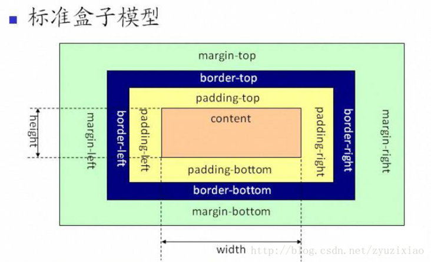

HTML,CSS,浏览器 相关
1、网络中使用最多的图片格式有哪些
JPEG, GIF, PNG，最流行的是JPEG格式，可以把文件压缩到最小，在ps以JPEG格式存储时，提供11级压缩级别
2、请简述css盒子模型

css盒模型从外岛内可以分为4个部分：margin（外边距）、border（边框）、padding（内边距）、content（内容）。默认情况下，盒子的width和height属性只是content的宽和高。
参考：https://segmentfault.com/a/1190000015235886
3、视频/音频标签的使用
视频使用：
标签属性：
src 需要播放的视频地址；
width/height 设置播放视频的宽高；
autoplay 是否自动播放；
controls 是否显示控制条；
poster 没有播放之前显示的展示图片；
loop 是否循环播放；
preload 预加载视频；与autoplay冲突，设置了autoplay属性，preload属性会失效；
muted 静音模式；
使用：
音频：属性和视频差不多，不过宽高和poster属性不能用
4、HTML5新增的内容有哪些？
新增语义化标签、表单类型、表单元素、表单事件、多媒体标签、canvas和svg、本地存储等
5、HTML5新增的语义化标签有哪些？
语义化优点：（1）提升可访问性（2）seo（3）结构清晰，利于维护
header 页面头部；main 页面主要内容；footer 页面底部；nav 导航栏；aside 侧边栏；aticle 页面的一块独立内容；section 区块相当于div；figure
价值独立内容（上图下字）；Hgroup 标题组合标签；mark 高亮显示；dialog 加载对话框标签；Embed 加载插件的标签；video 视频； audio 音频；
6、css3新增的特性？
边框：border-radius；背景：background-size；渐变：linear-gradient()；文本：word-wrap和text-overflow；转换：transform；2d转换：rotate,translate,scale等；3d转换：perspective；过渡：transition；动画：animation；
7、清楚浮动的方式有哪些？说出各自的优点
浮动会导致高度坍塌，当所有的子元素浮动的时候，如果父元素没有设置高度，这时候就会导致父元素高度坍塌；
（1）给父元素单独定义高度；
优点：简单快速，代码少；缺点：无法进行响应式布局。
（2）父级定义overflow:hidden;zoom:1;
优点：简单快捷，代码少，兼容性好；缺点：超出部分将被隐藏，布局的时候要注意。
（3）在浮动元素后面加一个空标签，{clear:both;height:0;overflow:hidden;}
优点：简单快速，代码少，兼容性好；缺点：增加空标签，不利于页面优化。
（4）父级定义overflow:auto;
优点：简单，代码少，兼容性好；缺点：内容宽高超过父级div时，会出现滚动条。
（5）万能清除法：给坍塌元素添加伪元素
.father :after{ display:block;clear:both;content: '';height:0;overflow:hidden;visibility:hidden; }
优点：写法固定，兼容性好；缺点：代码多。
参考：https://segmentfault.com/a/1190000004865198
8、定位的属性值有何区别？
position有四个属性值：relative, abosulte, fixed, static
relative相对定位：不脱离文档流，相对于自身定位
abosulte绝对定位：脱离文档流，相对于父级定位
fixed固定定位：脱离文档流，相对于浏览器窗口定位
static默认值，元素出现在正常的流中
9、子元素如何在父元素中居中？
略。。。
10、border-box和content-box的区别？
content-box 标准盒模型，width不包括padding和border；
border-box 怪异（IE）盒模型，width包括padding和border；
11、元素垂直居中？
略。。。
12、如何让chrome浏览器显示小于12px的字体？
添加谷歌私有属性：-webkit-text-size-adjust: none; 或者设置-webkit-transform: scale()
13、css选择器有哪些？哪些属性可以继承？优先级如何计算？
元素选择器，id选择器，群组选择器，类选择器，通配符选择器，后代选择器，伪类选择器，伪元素选择器，属性选择器
14、网页中有大量图片加载很慢，你有什么办法进行优化？
图片懒加载，图片预加载，使用雪碧图
15、行内元素/块级元素有哪些？
行内元素：相邻的行内元素会排列在同一行，不会独占一行，设置宽高无效
块级元素：会独占一行，可以设置宽高等属性
块级元素：div h1-h6 hr p ul ol table address blockquote等
行内元素：a br i em img input select span sub sup u textarea
16、浏览器的标准模式和怪异模式区别？
（1）盒模型的处理差异：标准盒模型的宽度和高度等于内容区的宽度和高度，不包含内边距和边框，而怪异模式下使用的是IE盒模型，宽高包含那边距和边框。
（2）行内元素的垂直对齐：标准模式基于基线对齐，quirks模式下基于底部对齐。
参考：https://www.jianshu.com/p/dcab7cde8c04
17、margin和padding在什么场合下使用？
margin 外边距 自身边框到另一个边框之间的距离；
padding 内边距 自身边距到自身内容之间的距离；
当需要在border外侧添加空白时使用margin，当需要在border内侧添加空白时用padding。
18、弹性盒子布局属性有哪些？
flex-direction：弹性容器中子元素排列方式（主轴的方式）
flex-wrap：设置弹性盒子的子元素超出父容器时是否换行
flex-flow：是flex-direction和flex-wrap的简写形式
justify-content：设置弹性盒子在主轴上的对齐方式
align-items：设置弹性盒子在交叉轴上的对齐方式
align-content：设置行对齐
参考：https://www.ruanyifeng.com/blog/2015/07/flex-grammar.html
19、怎么实现标签禁用？
添加disabled属性
20、flex布局原理？
通过给父盒子添加flex属性，来控制盒子的位置和排练方式
21、px，rem，em的区别？
px：绝对长度单位，相对于显示器屏幕分辨率而言的；
em：相对长度单位，相对于父元素的字体大小；
rem：相对于html跟元素的字体大小；
参考：https://www.jianshu.com/p/a0bdd3e9133d
22、网页的三层结构有哪些？
结构（html）、表现（css）、行为（js）
23、说说媒体查询？
media属性，就是根据不同的媒体类型设置不同的css样式，达到自适应的目的。
24、rem缺点？
比如，小说网站，屏幕越小的移动设备，如果用了rem肯定文字就越小，会导致看文章的时候特别费眼。
25、css常见的兼容性？
浏览器对标签的默认支持不同，所以需要统一，进行css reset。
IE6双边距bug：（1）给float元素添加display:inline;（2）用hack处理；
上下margin重合问题，不要同时采用top和bottom
min-height兼容性
超链接访问回购样式混乱，hover不出现了。按照顺序：L-V-H-A
chrome下默认会将小于12px的文本强制按照12px来解析。解决方案添加样式{-webkit-text-size-ajust: none}
css控制透明度，一般之间用{opacity: 0.6}；IE就filter: alpha(opacity=60)
css3风格前缀
参考：https://blog.csdn.net/m0_38099607/article/details/72860686
26、垂直与水平居中方式？
略。。。
27、三栏布局两边固定中间自适应
（1）margin负值法：左右两栏均左浮动，左右两栏采用负的margin值，中间栏被宽度为100%的浮动元素包起来；
（2）自身浮动法：左栏左浮动，右栏右浮动，中间栏放最后
（3）绝对定位法：左右两栏采用绝对定位，分别固定于页面的左右两侧，中间的主体栏用左右margin值撑开距离；
（4）flex布局；
（5）grid布局；
（6）table布局；
28、Doctype作用？
声明文档类型
29、说一下html5 drag api
略。。。
30、对HTML语义化的理解
指用正确的标签包含正确的内容，结构良好，便于阅读。
31、web性能优化
降低请求量：合并js，减少http请求数，gzip压缩，webp，lazyload；
加快请求速度：预解析DNS，减少域名数，并行加载，CDN分发；
缓存：http协议缓存请求，离线缓存mainifest，离线数据存储localStorage；
渲染：JS/CSS优化，加载顺序，服务端渲染，pipeline。
32、浏览器缓存机制
缓存分两种：强缓存和协商缓存，根据响应的header内容来决定；
强缓存相关字段有：expires，cache-control；如果同时存在，cache-control的优先级要高于expires；
协商缓存相关字段有：Last-Modified/If Modified-Since和Etag/If-None-Match
33、浏览器输入网址到页面渲染全过程
DNS域名解析、TCP链接、发起HTTP请求、服务器处理请求并返回HTTP报文、解析渲染页面、连接结束
34、画一条0.5px的线
（1）采用meta viewpoint，设置initial-scale=0.5
（2）采用border-image方式
（3）采用transform: scale()
参考：https://juejin.cn/post/6844903582370643975
linear-gradient(0deg, #fff, #000)
1px
box-shadow: 0 0.5px 0 #000;
1px
35、关于js动画和css3动画的差异性
js动画缺点：在主线程中运行，而主线程还有其他需要运行的脚本、样式计算、布局、绘制等任务，对其干扰可能导致阻塞，从而造成丢帧的情况；另外复杂度高于css动画；
js动画优点：动画控制能力很强，可以在动画播放过程中进行控制；比css3动画丰富；无兼容问题；
css3动画缺点：运行过程中控制较弱，无法附加事件绑定回调函数；代码冗长；
css3动画优点：代码相对简单，性能调优方向固定；对于支持不好的浏览器，可以做到自然降级；
36、双边距重叠问题
多个相邻（兄弟或者父子关系）普通流中的快元素垂直方向margin会重叠的结果为：
两个相邻的外边距都是正数时，折叠的结构时他们两者之间较大的值。两个相邻外边距都是负数时，折叠结果是两者绝对值的较大值。两个外边距一正一负时，折叠结果时两者相加的和。
37、清除浮动
参考题7
38、css选择器有哪些？优先级？
id选择器，class选择器，标签选择器，伪类选择器，伪元素选择器
优先级为：id选择器 > class选择器 > 标签选择器
带有!important标记的样式属性优先级最高
样式来源不同时，优先级为：内联样式 > 内部样式 > 外部样式 > 浏览器用户自定义样式 > 浏览器默认样式
!important > style内联样式
39、css动画如何实现？
animation：由keyframe规则实现
transition：过渡动画
40、如何实现元素的垂直居中？
方案一：父元素display:flex;align-items:center;
方案二：元素绝对定位，top:50%;margin-top:-(高度/2)
方案三：高度不固定，元素绝对定位，top:50%;transform: translate(-50%)
父元素table布局，子元素设置verticle-align:center;
41、css3中对溢出的处理
text-overflow属性，clip时修剪文本；ellipsis为现实省略符号；string为使用给定的字符串来代表被修剪的文本
42、对css3的新属性有了解过吗？
css3的新特性中，在布局方面新增了flex布局，在选择器方面新增了first-of-type，nth-child等选择器，在盒模型方面添加了box-sizing来改变盒模型，在动画方面增加了animation，2d变换，3d变换等，在颜色方面添加透明度，rgba等，在字体方面允许嵌入字体和设置阴影等，最后还有媒体查询。
43、overflow的原理
块级格式上下文
44、css定位
static：默认值，设置top，left，bottom，right无效；
relative：相对于自身定位，必须搭配top，left，bottom，right使用，用来指定偏移的方向和距离。
absolute：相对于不为static的父级定位，没有就相对于跟元素html定位，必须搭配top，left，bottom，right使用。
fixed：相对于视口（浏览器窗口）进行偏移，元素不会随着页面滚动而变化，须搭配top，left，bottom，right使用。
sticky：它会产生动态效果，很像relative和fixed的结合：一些时候是relative定位，另一些时候自动变成fixed定位。
参考：https://www.ruanyifeng.com/blog/2019/11/css-position.html
Javascript相关
1、js基础数据类型？
字符串string，数值number，布尔boolean，null，undefined，Symbol
2、Ajax如何使用？
一个完整的Ajax请求包括五个步骤：
（1）创建XMLHttpRequest对象
（2）使用open方法创建http请求，并设置请求地址
（3）设置发送的数据，用send发送请求
（4）注册事件，获取响应并更新页面
3、如何判断一个数据是NaN？
NaN 非数字，用typeof检测是number类型；
（1）利用NaN是唯一一个不等于自身的特点；
（2）利用ES6中提供的Object.is()方法；
（3）使用isNaN（不推荐）
5、闭包是什么？有什么特性？对页面会有什么影响？
闭包就是有权访问其他函数内部变量的函数。
简单理解成：定义在一个函数内部的函数。其中一个内部函数在包含他们的外部函数之外被调用时，就形成了闭包。
特点：
（1）函数嵌套函数
（2）函数内部可以引用外部的参数和变量
（3）参数和变量不会被垃圾回收机制回收
使用：
（1）读取函数内部的变量
（2）这些变量始终保存在内存中，不会在外层函数调用后自动清除
优点：
（1）变量长期驻扎在内存中；
（2）避免全局变量的污染；
（3）私有成员的存在；
缺点：会造成内存泄漏
参考：https://www.ruanyifeng.com/blog/2009/08/learning_javascript_closures.html
6、js中常见的内存泄漏
（1）意外的全局变量；
（2）被遗忘的计时器或回调函数；
（3）脱离DOM的引用；
（4）闭包
7、事件委托是什么？如何确定事件源？
事件委托就是利用事件冒泡，只指定一个事件处理程序，就可以管理某一类型的所有事件。
事件委托，又称事件代理，是js中很常见的绑定事件的技巧，事件委托就是把原来需要绑定在子元素的响应事件委托给父元素，让父元素担当事件监听的职务，事件委托的原理是DOM元素的事件冒泡。
8、什么是事件冒泡？
一个事件触发后，会在子元素和父元素之间传播，这种传播分为三个阶段：
捕获阶段：从window对象传到目标节点（从外到里），这个阶段不会响应任何事件；
目标阶段：在目标节点上触发
冒泡阶段：从目标节点传回window对象（从里到外），事件委托就是利用事件冒泡的机制把里层需要响应的事件绑定到外层
9、本地存储和cookie的区别？
cookie非常小，它的大小限制是4kb，主要用途有保存登录信息；
localStorage是HTML5标准中加入的技术，它并不是什么划时代的新东西。
sessionStorage与localStorage接口类似，但是保存数据的生命周期不同。sessionStorage是可以将一部分数据在当前会话中保存下来，刷新页面数据依然存在，但当页面关闭后，sessionStorage中的数据就会被清空。
三者异同：
（1）数据的生命周期：
cookie一般由服务器生成，可设置失效时间。如果在浏览器端生成Cookie，默认是关闭浏览器后失效；
localStorage除非手动清除，否则永远保存；
sessionStorage仅在当前会话下有效，关闭页面或浏览器后被清除；
（2）存放数据大小：
cookie是4kb左右；
localStorage，sessionStorage一般为5m；
（3）与服务器通信：
cookie每次都会携带在http头中，如果使用cookie保存过多数据带来性能问题；
localStorage，sessionStorage仅在客户端（浏览器）中保存，不参与和服务器通信；
（4）易用性：
cookie需要自己封装
localStorage，sessionStorage有现成api接口可以使用；
参考：https://cloud.tencent.com/developer/article/1408696
10、ES6新特性
const和let、模板字符串、箭头函数、函数的参数默认值、对象和数组解构、for...of和for...in，ES6中的类。
11、let和var以及const区别？
var声明的变量会挂载在window上，而let和const生命的变量不会；
var声明的变量存在变量提升，let和const不存在变量提升；
同一作用域下var可以声明同名变量,let和const不可以；
let和const声明会形成块级作用域；
let暂存死区；
const一旦声明必须赋值，不能用null占位，声明后不能再修改，如果声明的是复合类型数据，可以修改属性；
参考：https://www.jianshu.com/p/4e9cd99ecbf5
12、数组方法有哪些？请简述
（1）push()从后面添加元素，返回值为添加完后的数组长度；
（2）pop()从后端删除元素，返回值是删除的元素；
（3）shift()从前面删除元素，只能删一个，返回值是删除的元素；
（4）unshift()从前面添加元素，返回值是添加完后的数组长度；
（5）splice(i, n)删除从i（索引值）开始之后的那个元素，返回值是删除的元素；
（6）concat()连接两个数组，返回值为连接后的新数组；
（7）sort()将数组进行排序，返回值是排好的数组，默认按照最左边的数字排序，不是按照大小顺序拍的；
（8）reverse()将数组反转，返回值是反转后的数组；
（9）slice(start, end)截取索引值start到索引值end的数组，不包含end索引的值，返回值是截取的数组；
（10）forEach(callback)遍历数组，无return，即使有return，也不会返回任何值，并且影响原来的数组；
（11）map(callback)遍历数组，有return返回一个新数组；
（12）filter(callback)过滤数组，返回一个满足要求的数组；
13、json如何新增和删除键值对？
新增：json[key]: value；删除：遍历对象
14、什么是面向对象？请简述
面向对象是一种编程思想，是基于面向过程而言的。它将真实世界各种复杂关系，抽象为一个个对象，然后由对象之间分工与合作，完成对真实世界的模拟。
特点：封装（隐藏对象的属性和实现细节，对外提供公共访问方式）、继承（提高代码复用性）和多肽（父类或接口定义的引用变量可以指向子类或具体实现类的实例对象）
15、普通函数和构造函数的区别？
（1）构造函数也是一个普通函数，创建方式和普通函数一样，但是构造函数习惯上首字母大写；
（2）调用方式不一样，普通函数直接调用，构造函数要用关键字new来调用；
（3）调用时，构造函数会内部创建一个新对象，就是实例，普通函数不会创建新对象；
（4）构造函数内部的this指向实例，普通函数内部的this指向调用函数的对象；
（5）构造函数默认的返回值是创建的对象（也就是实例），普通函数的返回值由return语句决定；
（6）构造函数的函数名与类名相同；
16、请简述原型、原型链、继承
prototype 和 __proto__
（1）每个对象都有一个__proto__属性，并且指向它的prototype原型对象；
（2）每个构造函数都有一个prototype原型对象；
prototype原型对象里的constructor指向构造函数本身；

实力对象的__proto__指向构造函数的prototype，从而实现继承；
原型链：
每一个对象都一个__proto__，它指向它的prototype原型对象，而prototype原型对象又有自己的prototype原型对象，这样层层往上直到一个对象的原型prototype为null，这个查询的路径就是原型链
继承
是指一个对象直接使用另一个对象的属性和方法
参考：https://zhuanlan.zhihu.com/p/35790971
17、对Promise的理解
什么是Promise？
Promise是一种解决异步编程的方案，相比回调函数和事件更合理和更强大。
Promise有三种状态：pending初始状态也叫等待状态，fulfilled成功状态，rejected失败状态；状态一旦改变，就不会再变。创建Promise实例后，它会立即执行。
Promise两个特点：
（1）Promise对象的状态不受外界影响；
（2）Promise的状态一旦改变，就不会再变，任何时候都可以得到这个结果，状态不可逆；
Promise的三个缺点：
（1）无法取消Promise，一旦新建它就会立即执行，无法中途取消；
（2）如果不设置回调函数，Promise内部抛出错误，不会反映到外部；
（3）当处于pending状态时，无法得知目标进展到哪一个阶段；
18、我们用Promise来解决什么问题？
回调地狱，代码难以维护，常常第一个函数的输出时第二个函数输入这种现象；
Promise可以支持多并发的请求，获取并发请求中的数据；
Promise可以解决异步的问题，本身不能说Promise是异步的。
19、请简述async的用法
async就是generation和Promise的语法糖，async就是将generator的*换成async，将yild换成await
函数前必须加一个async，异步操作方法前加一个await关键字，意思就是等一下，执行完了再继续走，注意：await只能在async函数中运行，否则会报错；
Promise如果返回的是一个错误的结果，如果没有做异常处理，就会报错，所以用try...catch捕获一下就可以了。
20、一个页面从输入url到页面加载显示完成，这个过程都发生了什么？
DNS解析、TCP连接、发送HTTP请求、服务器处理请求并返回HTTP报文、浏览器解析渲染页面、连接结束
参考：https://segmentfault.com/a/1190000006879700
21、get请求传餐长度的误区？
误区：我们经常说get请求参数的大小存在限制，而post请求的参数大小是无限制的。实际上http协议从未规定过get/post的请求长度限制是多少。对get请求参数的限制是来源于浏览器或web服务器，它们限制了url的长度。
22、补充get和post请求在缓存方面的区别？
get请求类似于查找的过程，用户获取数据，可以不用每次都与数据库连接，所以可以使用缓存。
post请求不同，一般是修改和删除的工作，所以必须与数据库交互，所以不能使用缓存。因此get请求适合于请求缓存；
23、说一下闭包
一句话概括：闭包就是能够读取其他函数内部变量的函数，或者子函数在外调用，子函数所在的父函数的作用域不会被释放。
24、说说前端中的事件流
事件流描述的是从页面中接收事件的顺序；
DOM2级事件流包含下面阶段：
事件捕获阶段、处于目标阶段、事件冒泡阶段
25、说一下事件委托
简介：事件委托值得是，不在事件的发生地（直接dom）上设置监听函数，而是在其父元素上设置监听函数，通过事件冒泡，父元素可以监听到子元素上事件的触发，通过判断时间发生元素的dom的类型，作出不同的响应。
举例：最经典的就是ul和li标签的事件监听，比如我们在添加事件的时候，采用事件委托机制，不会在li标签上直接添加，而是在ul父元素上添加。
好处：比较合适动态元素的绑定，新添加的自元素也会有监听函数，也可以有事件触发机制。
26、js中的new操作符做了哪些事情？
new操作符创建了一个空对象，然后将这个对象的原型指向构造函数的prototype，执行构造函数后返回这个对象。
27、改变函数内部this指针的指向函数（bind，apply，call）的区别？
通过call和apply改变函数的this指向，他们两个函数的第一个参数都是一样，表示要改变指向的那个对象，第二个参数，apply是数组，而call是arg1,arg2...的类数组形式。通过bind改变this作用域会返回一个新的函数，这个函数不会马上执行。
28、js的各种位置，比如clientHeight，scrollHeight，offsetHeight，以及scrollTop，offsetTop，clientTop的区别？
clientHeight：表示可视区的高度，不包含border和滚动条
offsetHeight：表示可视区的高度，包含border和滚动条
scrollHeight：表示所有区域的高度，包含了因为滚动而被隐藏的部分。
clientTop：表示边框border的厚度，在未指定的情况下一般为0
scrollTop：滚动后被隐藏的高度
offsetTop：返回当前元素相对与最近的offsetParent父节点顶部的距离。和滚动条没有关系。
29、拖拽功能的实现？
参考：https://juejin.cn/post/6844904158273765384
30、JS中的垃圾回收机制
JS会在创建变量时自动分配内存，在不使用的时候会自动周期性的释放内存，释放的过程就叫“垃圾回收”。
回收算法：标记清除法和引用计数法
内存泄漏：意外的全局变量，定时器，闭包，事件监听
参考：https://segmentfault.com/a/1190000038175558
31、JS监听对象属性的改变
（1）ES5的Object.defineProperty
（2）ES6的Proxy
32、自己实现一个bind函数
参考：9、bind模拟实现.html
33、怎么控制一次加载一张图片，加载完再加载下一张？
参考：https://www.cnblogs.com/lyt0207/p/13796529.html
34、JS实现深度克隆？
参考：3、克隆.html
35、能讲讲JS语言特性吗？
一般运行在客户端浏览器上，nodejs兴起后也可以运行于服务端；
不需要编译，直接解析执行代码；是弱类型语言，较为灵活；
跨平台，脚本语言
35、JS全排列
参考：https://juejin.cn/post/6844903696132734989
Jquery相关
1、css预处理sass less是什么？为什么要使用他们？
sass和less都是css预处理器，是css上的一种抽象层，是一种特殊的语法，最终会编译成css，less是一种动态样式语言，给css赋予了动态语言特性，比如：变量，继承，嵌套。less既可以在客户端运行，也可以在服务端运行。
2、JS中call()和apply()的区别
call()和apply()都是调用对象的一个方法，用另一个对象代替当前对象。而不同之处在于传递的参数，apply最多只能两个参数——新this对象和一个数组，如果arg不是数组则会报错；
相同点：两个方法作用一样，都是借助别人的方法来调用。
不同点：方法传递的参数不同。
3、为什么会造成跨域？请简述同源策略？
在前后端分离的模式下，前后端的域名是不一致的，此时就会发送跨域访问问题。
跨越问题来源于浏览器的同源策略，即只有协议+主机名+端口号相同，才允许相互访问。也就是说浏览器只能访问和操作自己域下的资源，不能访问和操作其他域下的资源。
同源策略是NetScape提出的一个著名的安全策略。所谓同源，指的是协议、域名、端口相同。浏览器处于安全方面的考虑，只允许本域名下的接口交互，不同源的客户端脚本，在没有明确授权的情况下，不能读写对方的资源。
4、请输出三种减少页面加载时间的方式？
（1）优化图片
（2）优化css
（3）标明高度和宽度
（4）减少http请求（合并资源）
5、this指向
在js中，this通常指向的是我们正在执行的函数本身，或者是指向该函数所属的对象。
全局的this->指向window
对象中的this->指向其本身
事件中的this->指向事件对象
6、jsonp的工作原理是什么？它为什么不是真正的ajax？
（1）js跨域请求数据是不可以的，但是js跨域请求js脚本是可以的。
（2）所以可以把要请求的数据封装成一个js语句，做一个方法的调用。
（3）跨域请求js脚本可以得到此脚本，得到js脚本后会立即执行。
（4）可以把数据作为参数传递到方法中，就能获得数据，从而解决跨域问题。
（5）jsonp的原理：（动态创建script标签，回调函数）
浏览器在js请求中，是允许通过script标签的src跨域请求，可以在请求的结果中添加回调方法名，在请求页面中定义方法，就可以获取到跨域请求的数据。
为什么不是真正的ajax？
（1）ajax和jsonp这两种技术在调用方式上看起来很像，目的也一样，都是请求一个url，然后把服务器返回的数据进行处理，因此jquery和ext等框架都把jsonp作为ajax的一种形式进行了封装。
（2）但ajax和jsonp其实本质上是不同的东西。ajax的核心是通过XmlHttpRequest获取页面内容，而jsonp是动态添加script标签来调用服务器提供的js脚本。
（3）所以说，其实ajax和jsonp的区别不在于是否跨域，ajax通过服务端代理一样可以实现跨域，jsonp本身也不排期同域数据的获取。
（4）jsonp是一种方式或者说非强制协议。
参考：22、jsonp实现.html
7、请掌握两种以上的数组去重方式
（1）利用ES6 Set去重
（2）利用for循环嵌套for循环，然后splice去重
（3）利用indexOf去重
（4）利用sort()
（5）利用对象的属性不能相同的特点进行去重
（6）利用includes
（7）利用hasOwnProperty
（8）利用filter
（9）利用递归去重
（10）利用Map数据结果去重
（11）利用reduce+includes
（12）[...new Set(arr)]
参考：https://segmentfault.com/a/1190000016418021
8、深浅拷贝如何实现？
参考：https://juejin.cn/post/6844903493925371917
9、为什么js是弱类型语言？
弱类型语言是相对于强类型来说的，在强类型语言中，变量的类型有很多种，比如int char float
boolean，不同类型相互转换有时候需要强制转换，而js只有一种类型var，为变量复制时会自动判断类型并且转换，所以是弱类型语言。
10、怎么转换less为css？
（1）用node将less文件生成css文件；
（2）用webstorm自动生成；
11、echarts使用最多的是什么？
图标以及图标组合
12、for循环和map循环有什么区别？
for遍历对象自身和继承可枚举的属性，也就是说会包含那些原型链上的属性
map方法不会对空数组进行检测，会返回一个新数组，不会对原数组产生影响。
13、请写出一个简单的类与继承；
使用语法结果创建对象、使用构造器创建对象、Object.create创建对象、class关键字创建对象
继承：原型链继承、借用构造函数法、组合继承、原型式继承、寄生式继承、寄生组合继承
https://github.com/mqyqingfeng/Blog/issues/16
14、同步、异步的区别/阻塞、非阻塞的区别
同步（阻塞的），异步（非阻塞）
比如：同步，咱俩在一起上班，到吃饭时间了，我去喊你吃饭，你很忙，我就坐着等你忙完再一起去吃饭；
异步：咱俩在一起上班，到吃饭时间了，我去喊你吃饭，你很忙，我就先自己去吃了，你忙完了再去吃饭；
https://segmentfault.com/a/1190000013039660
15、重绘和回流是什么？
重绘：当渲染树中的一些元素需要更新属性，而这些属性只是影响元素的外观、风格，而不会影响布局的操作，比如background-color，我们将这样的操作称为重绘。
回流：当渲染树中的一部分因为元素规模尺寸、布局、隐藏等改变而需要重新构建的操作，会影响布局的操作，这样的操作我们称为回流。
任何改变几何信息的操作，都会触发回流
（1）添加或删除可见的DOM元素
（2）元素尺寸改变-边距、填充、边框、宽高
（3）内容变化，比如用户在input框中输入文字
（4）浏览器窗口尺寸改变-resize事件发生时
（5）计算offsetWidth和offsetHeight属性
（6）设置style属性的值
（7）当你修改网页的默认字体时
回流必定发生重绘，重绘不一定引发回流
16、http是什么？有什么特点？
http叫做超文本传输协议，是互联网应用最广泛的一种网络协议；
特点：基于请求-响应模式、无状态、无连连。
17、http和https区别？
http是超文本传输协议，信息是明文传输，https是具有安全行的ssl加密传输协议；
http和https连接方式完全不同，端口也不同，http是80，https是443；
http的连接很简单，是无状态的，https是由ssl+http协议构建的可进行加密传输，身份认证的网络协议，比http协议安全；
18、call和apply区别？
第一个参数相同，call从第二个参数起是参数列表，apply第二个参数是数组。
19、箭头函数和普通函数的区别？
（1）语法更加简介、清晰
（2）箭头函数不会创建自己的this
（3）箭头函数继承而来的this指向永远不变
（4）call(),apply(),bind()无法改变箭头函数中的this的指向
（5）箭头函数不能作为构造函数使用
（6）箭头函数没有自己的arguments
（7）箭头函数没有原型prototype
（8）箭头函数不能用作Generator函数，不能使用yeid关键词
参考：https://juejin.cn/post/6844903805960585224
20、什么是js内存泄漏？
内存泄漏是指一块被分配的内存既不能使用又不能回收，直到浏览器进程结束；
释放内存的方法：赋值为null。
21、你如何对网站的文件和资源进行优化？
（1）文件合并（目的减少http请求）；
（2）文件压缩（目的是直接减少文件下载的体积）；
（3）使用cdn托管资源；
（4）使用缓存
（5）开启gzip压缩
（6）meta标签优化、heading标签优化、alt优化
（7）反向连接，网站外链优化
（8）按需加载资源
22、请简述ajax的执行过程，以及常见的http状态码；
ajax的执行过程：
（1）创建一个XMLHttpRequest对象；
（2）创建一个新的http请求，并指定请求方式、url、验证信息；
（4）发送http请求；
（5）设置响应http请求状态变化的函数，并获取异步调用返回的数据；
（6）使用Javascript和dom实现局部刷新。
常见的http状态码：
1XX：表示目前是协议处理的中间状态，还需要后续操作。
2XX：表示成功状态。
200 OK, 206 partical Content
3XX：重定向状态，资源位置发生变动，需要重新请求。
301 Move Permanently：永久重定向
302 Found：临时重定向。
304 Not Modified：命中协商缓存。
4XX：请求报文有误。
400 Bad Request：请求无效。
403 Forbidden：服务器已经得到请求，但是拒绝执行，比如没有权限
404 Not Found：资源未找到，服务器不存在对应资源
5XX：服务器端发送错误。
500 Internal Server Error：服务器报错
502 Bad Gateway：访问出错
503 service Unavailabel：服务器繁忙或者停机维护，暂时无法处理请求。
预加载和懒加载的区别？预加载在什么时候加载合适？
（1）预加载是指页面在完成之前，提前将所需资源下载，之后使用的时候从缓存中调用；
（2）懒加载是延迟加载，按照一定的条件或者需求等到满足条件的时候再加载对应资源；
两者区别是一个提前加载，一个迟缓甚至不加载。懒加载对服务器前端有一定的缓解压力作用，预加载则会增加服务器前端压力。
24、jquery选择器有哪些？
基础选择器：ID选择器、类选择器、元素选择器、通配符选择器、
层次选择器：后代选择器、子选择器、同辈选择器
过滤选择器：基本过滤选择器、内容过滤器、可见性选择器、属性过滤器、表单对象属性过滤选择器
25、jquery插入节点的方法
append(),appendTo(),prepend(),prependTo(),after(),insertAfter(),before(),insertBefore()
26、js的函数节流和防抖的区别？
函数节流: 指定时间间隔内只会执行一次任务；
函数防抖: 任务频繁触发的情况下，只有任务触发的间隔超过指定间隔的时候，任务才会执行。
参考：1、防抖和节流.html
27、Get和Post不同之处
Get通常是从服务器获取数据，Post是向服务器传送数据；
在客户端，get通过url提交数据，数据在url中可以看到，post方式，数据在html header中提交
安全性问题
Get提交数据最多只有1024字节，post没有限制
28、什么是csrf攻击？
通常情况下，CSRF攻击是攻击者借助受害者的Cookie骗取服务器的信任，可以在受害者毫不知情的情况下以受害者名义伪造请求发送给攻击服务器，从而在并未授权的情况下执行在权限保护之下的操作。
参考：40、XSS&CSRF.html
29、什么时候用深拷贝/浅拷贝？
参考：3、克隆.html
Vue相关
1、vue的核心是什么？
Vue是一套构建用户界面的渐进式自底向上增量开发的MVVM框架，vue的核心只关注视图层；
核心思想：
数据驱动（视图的内容随着数据的改变而改变）
组件化（可以增加代码的复用性，可维护性，可测试性，提高开发效率，方便重复使用，体现了高内聚低耦合）
2、请简述你对vue的理解
Vue是一套构建用户界面的渐进式的自底向上增量开发的MVVM框架，核心是关注视图层；vue的核心是为了解决数据的绑定问题，为了开发大型单页面和组件化的应用，它的核心思想是数据驱动和组件化；
这里也说一下MVVM思想，vm是v和m连接的桥梁，当模型数据修改时，vm层会检测到，并通知视图层进行响应修改。
3、请简述vue的单向数据流
父级prop的更新会向下流动到子组件中，每次父组件发生更新，子组件所有的prop都会刷新为最新的值；
数据从父组件传递给子组件，只能单向绑定，子组件内部不能直接修改父组件传递过来的数据
4、Vue常用修饰符有哪些？
修饰符：
.lazy 改变后触发，光标离开input输入框的时候值才会改变
.number 将输出字符串转为number类型
.trim 自动过滤用户输入的首尾空格
事件修饰符：
.stop 阻止点击冒泡，相当于原生js的event.stopPropagation()
.prevent 防止执行预设的行为，相当于原生js中的event.preventDefault()
.capture 添加事件侦听器时是呀事件捕获模式，就是谁有该事件修饰符，就先触发
.self 只会触发自己范围的事件，不包括子元素
.once 只执行一次
键盘修饰符：
.enter回车键 .tab制表键 .esc返回键 .space空格键 .up向上键 .down向下键 .left向左键 .right向右键
系统修饰符：
.ctrl .alt .shift .meta(mac下command键)
5、v-text与{{}}与v-html的区别？
{{}}将数据解析为纯文本，不能显示输出html
v-html 可以渲染输出html
v-text将数据解析为纯文本，不能输出真正的html，与花括号的区别是在页面加载时不限时双花括号
v-text指令：
作用：操作网页元素中的纯文本内容，{{}}是它的另外一种写法；
v-text与{{}}区别：
v-text与{{}}等价，{{}}叫模板插值，v-text叫指令
有一点区别就是，在渲染的数据比较多的时候，可能会爸大阔好显示出来，俗称屏幕闪动；
6、v-on可以绑定多个方法吗？
可以，如果绑定多个事件，可以用键值对形式：事件类型: 事件名
如果绑定是多个相同事件，直接用逗号分隔就行；
7、vue循环的key作用？
key值的存在保证了唯一性，vue在执行时，会对节点进行检查，如果没有key值，那么vue检查到这里有dom节点，就会对内容清空并且赋新值，如果有key值存在，那么会对新老节点进行对比，比较两者key是否相同，进行调换位置或删除操作。
8、什么时计算属性？
计算属性时用来声明式的描述一个值依赖了其他的值，当它依赖的这个值发生改变时，就更新DOM。
当在模板中把数据绑定到一个计算属性上时，vue会在它依赖的任何值导致计算属性改变时更新DOM。
每个计算属性都包括一个getter和setter，读取时触发getter，修改时触发setter。
9、vue单页面的优缺点？
优点：前后端分离，用户体验好，而且快，内容改变（切换路由）不需要重新加载整个页面；
缺点：不利于seo，初次加载时耗长（浏览器一开始就要加载html css js，所有的页面内容都包含在主页面中），页面复杂度提高了，导航不可用。
10、vuex是什么？怎么使用？在哪种场景下使用？
vuex是也专门为vue应用程序开发的状态管理模式，通过创建一个集中的数据存储，方便程序中所有组件进行访问，简单来说vuex就是vue的状态管理工具。
11、vue中路由跳转方式
vue中路由跳转有两种，分别是声明式和编程式。
用js方式进行跳转的叫编程式导航 this.$router.push()
用router-link进行跳转的叫声明式路由，router-view路由出口，路由模板显示的位置
12、vue跨域的解决方式
（1）后台更改header
（2）使用jquery提供jsonp
（3）用http-proxy-middleware（配置代理服务器的中间件）
13、简述vue的生命周期
vue的生命周期就是vue实例创建到销毁的过程。期间会有8个钩子函数的调用。
beforeCreate（实例初始化之前）
created（实例创建完成）
beforeMount（实例挂载开始之前）
mounted（实例挂载之后）
beforeUpdate（数据更新之前）
updated（组件dom已经更新）
beforeDestroy（实例销毁之前）
destroyed（实例销毁之后）
14、vue生命周期的作用
给了用户在不同阶段添加自己的代码的机会
15、dom渲染在哪个生命周期阶段内完成？
dom渲染在mounted中就已经完成。
16、vue路由的实现？
前端路由就是更新视图，但是不请求页面，利用冇电完成企鹅号，页面不会刷新；
官网推荐vue-router来引入路由模块。
17、简述vue路由模式hash和history
hash模式地址栏中有#号，history没有，history模式下刷新，会出现404，需要后台配置。
18、vue路由传参的两种方式，params和query方式与区别？
query用path引入，params用name引入，接收参数都是类似的，分别是this.$route.query.name和this.$route.params.name；
url展示上：params类似于post，query类似于get，也就是安全问题；params传值相对更安全点，query通过url传参，刷新页面还在，params刷新页面不在了。
19、vue数据绑定的几种方式？
单向绑定：双大括号{{}}、html内字符串绑定
v-bind绑定、html属性绑定
双向绑定：v-model
一次性绑定v-once，依赖于v-modal
20、vue如何注册一个全局组件？
Vue.componentVue.component('my-component-name', {// ... 选项 ...})
21、vue路由钩子/路由守卫有哪些？
全局守卫：beforeEach(to, from, next)和afterEach(to, from)
组件内守卫：beforeRouteEnter，beforeRouteUpdate，beforeRouteLeave
22、vue中如何进行动态路由设置？有哪些方式？怎么获取传递过来的数据？
动态路由也可以叫做路由传参，有query和params两种方式传参；
query用path引入，params用name引入，query用this.$route.query.name接收参数，params用this.$route.params.name接收参数
23、Elementui中常用组件有哪些？
略。。。
24、vue如何自定义指令？
使用vue.directive('demo', function(el, binding){})
25、vue中指令有哪些？
v-for：循环数组、对象、字符串、数字；
v-on：绑定事件监听；
v-bind：动态绑定一个或多个属性
v-model：表单空间或者组件上创建双向绑定
v-if v-else v-else-if 条件渲染
v-show 根据表达式真假，切换元素的display
v-html 更新元素的textContent
v-prev 跳过这个元素和子元素编译过程
v-clock 这个指令保持在元素上知道关联实例结束编译
v-once 只渲染一次
26、vue如何定义一个过滤器？
vue.filter('name', function(){})
27、对vue中keep-alive的理解？
概念：keep-alive是vue的内置组件，当它动态包裹组件时，会缓存不活动的组件实例，它自身不会渲染成一个dom元素也不会出现在父组件链中。
作用：在组件切换过程中将状态保留在内存中，防止重复渲染dom，减少加载事件以及性能消耗，提高用户体验
28、如何让组件中的css在当前组件生效？
在style中加上scoped；
29、vue生命周期一共有几个阶段？
创建、加载、更新、销毁
beforeCreate 创建前
created 创建后
beforeMount 挂载前
mounted 挂载后
beforeUpdate 更新前
updated 更新后
beforeDestroy 销毁前
destroyed 销毁后
30、mvvm和mvc的区别？
mvc：模型视图控制器，视图是可以直接访问模型，所以，视图里面会包含模型信息，mvc关注的时模型不变，所以，在mvc中，模型不依赖于视图，但是视图依赖模型。
mvvm：模型+视图+vm，vm作为模型和视图的桥梁，当模型层数据改变，vm会检测道并通知视图层进行相应的修改。
31、vue组件中的data为什么是函数？
data是一个函数时，每个组件的实例都有自己的作用域，每个实例相互独立，不会影响。（或者说，保持数据的独立性，不被共享）
32、vue双向绑定的原理？
vue双向绑定就是：数据变化更新视图，视图变化更新数据。
vue双向绑定是通过数据劫持和观察者模式来实现的。
数据劫持：object.defineProperty，它的目的时：当给属性赋值的时候，程序可以感知到，就可以控制改变属性值；
观察者模式：当属性发生改变的时候，使用该数据的地方也发生改变。
33、vue中组件怎么传值？
正向：父传子 父组件把要传递的数据绑定在属性上发送，子组件通过props接收；
逆向：子传父 子组件通过this.$emit（自定义事件名，要发送的数据），父组件设置一个监听事件来接收，然后拿到数据；
兄弟：eventBus 中央事件总线；
通过vuex
34、Bootstrap的原理？
通过定义容器大小，平分12份，再调整内外边距，结合媒体查询，就成了强大的响应式网格系统。
37、请简述插槽？
略。。。
38、简述watch
watch的作用时监控一个值的变化，并调用因为变化需要执行的方法。
39、简述vant ui
轻量、可靠的移动端vue组件库
40、计算属性与watch区别？
computed watch 区别就是computed的缓存功能，当无关数据改变时，不会重新计算，直接使用缓存中的值。计算属性时用来声明式的描述一个值依赖了其他的值，当所以来的值后者变量发生变化时，计算属性也跟着改变。
应用场景：
computed：用于复杂的逻辑运算；一个数据受一个或多个数据影响；用来处理watch和methods无法处理的，或处理起来不方便的情况。例如处理模板中的复杂表达式、购物车里面的商品数量和总金额之间的变化关系等。
watch：用来处理当一个属性发送变化时，需要执行某些具体的业务逻辑操作，或要在数量变化时执行异步或开销较大的操作；一个数据改变影响多个数据。例如用来监控路由、input输入框值的特殊处理等。
参考：https://juejin.cn/post/6844903807592169486
41、mvvm框架是什么？它和其他框架（jquery）的区别时什么？哪些场景合适？
mvvm和其他框架的区别是vue数据驱动，通过数据来显示视图而不是操作节点，适用于数据操作比较多的场景。
42、vue首屏加载慢的原因？怎么解决？白屏事件怎么检测？怎么解决白屏问题？
首屏加载慢的原因：第一次加载页面有很多组件数据需要渲染；
解决方法：
（1）路由懒加载 component: () => import('路由地址')
（2）ui框架按需加载
（3）gzip压缩
白屏时间检测？
参考1：https://juejin.cn/post/6844904185264095246
参考2：https://juejin.cn/post/6844904020482457613
解决白屏问题：
（1）使用v-text渲染数据
（2）使用{{}}预防渲染数据，但是同时是呀v-cloak指令（用来保持在元素上直到关联实例结束时进行编译）；v-cloack放置位置，并不需要添加到每个标签，只要在el挂载的标签上添加就可以。
43、vue双向数据绑定过程中，这边儿数据改变了怎么通知另一边改变？
数据劫持和观察者模式
vue数据双向绑定是通过数据劫持和观察者模式来实现的
数据劫持：object.defineProperty，它的目的是：当给属性赋值的时候，程序可以感知到，就可以控制属性值的有效范围，可以改变其他属性的值；
观察者模式它的目的是当属性发生改变的时候，使用该数据的地方也发生改变。
44、vuex流程
在vue组件里面，通过dispatch来触发action提交修改数据的操作，然后通过actions的commit触发mutation来修改数据，mutations接收到commit的请求，就会自动通过mutate来修改state，最后触发每一个调用它的组件更新。
45、vuex怎么请求异步数据？
（1）首先在state中创建变量；
（2）然后在action中调用封装好的axios请求，异步接收数据，commit提交给mutations；
（3）mutations中改变state中的状态，将从action中获取到的值赋值给state。
46、vuex中action如何提交给mutation的？
action函数接受一个与store实例具有相同方法和属性的context对象，因此你可以调用context.commit提交一个mutation，或者通过context.state和context.getters来回去state和getters。
47、route和router的区别？
router是VueRouter的一个对象，通过vue.use(VueRouter)和VueRouter构造函数得到一个router实例对象，这个对象是一个全局的对象，它包含了所有的路由许多关键的对象和属性。
route是一个跳转的路由对象，每一个路由都会有一个route对象，是一个局部的对象，可以获取对应的name，path，params，query等。
另一种回答：
this.$route：当前激活的路由的信息对象。每个对象都是局部的，可以获取当前路由的 path, name, params, query 等属性。
this.$router：全局的 router 实例。通过 vue 根实例中注入 router 实例，然后再注入到每个子组件，从而让整个应用都有路由功能。其中包含了很多属性和对象（比如 history
对象），任何页面也都可以调用其 push(), replace(), go() 等方法
49、vuex的state特性是？
state是数据源的存放地；
state里面的数据是响应式的，state中的数据改变，对应这个数据的组件也会发生改变；
state通过mapstate把全局的state和getters映射到当前组件的计算属性中；
50、vuex的Getter特性是？
getter可以对state进行计算操作，它就是store的计算属性；
getter可以在多组件之间敷用；
如果一个状态只在一个组件内使用，可以不用getter；
51、vuex的mutation特性是？
更新vuex store中修改状态的唯一方法就是提交mutation，可以在回调函数中修改store中的状态；
52、vuex的action特性是？
action类似与mutation，不同的是action提交的是mutation，不是直接变更状态，可以包含任意异步操作；
54、vuex的优势？
优点：解决了非父子组件的通信，减少了ajax请求次数，有些可以直接从state中获取。
缺点：刷新浏览器，vuex中的state会重新变为初始状态，解决办法是vuex-along，得配合计算属性和sessionStorage来实现。
55、vue路由懒加载（按需加载路由）
路由懒加载 component: () => import('路由地址')
56、v-for与v-if优先级？
不要v-for和v-if用在同一个元素上，原因：v-for比v-if优先级高；如歌每一次都需要遍历整个数组，将会影响速度，尤其是当需要渲染的只是很小一部分的时候；
57、请写出饿了么的5个组件
略。。。
58、vue在created和mounted这两个生命周期中请求数据有什么区别呢？
看实际情况，一般在created里面就可以，如果涉及到需要页面加载完成之后的话就用mounted。
在create的时候，视图中的html并没有渲染处理，所以此时如果直接去操作html的dom节点，一定找不到相关元素。
而mounted中，由于此时html依据渲染出来了，所以可以直接操作dom节点；
59、说说proxy的理解；
vue数据劫持的两个缺点：
（1）无法监听通过索引修改数组的值的变化；
（2）无法监听object也就是对象的值的变化；所以vue2.x中才会有$set属性的存在；
proxy是es6推出的新api，可以弥补以上两个缺点，所以vue3.x版本用proxy替换了object.defineProperty。
60、vue3是如何变得更快的？（底层、源码）
diff方法优化：
vue2中的虚拟dom是进行全量的对比。
vue3中新增了静态编辑：在与上次虚拟节点进行对比的时候，值对比带有patch flag的解ID那，并且可以通过flag的信息得知当前节点药对比的具体内容变化。
vue2无论元素是否参与更新，都会重新创建。
vue3对于不参与更新的元素，只会被创建一次，之后会每次渲染的时候被不停的复用；
e.cachHandler事件侦听缓存；
React相关
1、fetch vs ajax vs axios
传统ajax指的是XMLHttpRequest（XHR），最早出现的发送后请求技术，隶属于原始js，核心使用XMLHttpRequest对象，多个请求之间如果有先后关系的话，就会出现回调地狱。jquery中ajax是对原生XHR的封装；
axios是一个基于Promise，本质上也是对原生XHR的封装，只不过它是Promise的实现版本，符合最新的ES规范；
fetch不是ajax的进一步封装，而是原生js，没有使用XMLHttpRequest对象。
2、React事件处理-修改this指向？
（1）通过bind方法原地绑定，从而改变this指向
（2）通过创建剪头函数
（3）在constructor中提前对事件进行绑定
（4）将事件调用的写法改为箭头函数的形式
3、简述对react的理解
React起源于facebook，它是一个用于构建用户界面的js库；
特点：
高效灵活：react使用VDOM，减少了与DOM的交互，而且它能与已知的库或框架完美配合。
声明式的设计：react采用范式声明，开发者只需要声明显示内容，react就会自动完成。
组件化：react的组件可以代码复用。
单向数据流：react是单向数据流，数据通过props从父节点传递到子节点，如果父级的某个props改变了，react会重新渲染所有子节点。
参考：https://www.w3cschool.cn/article/32850981.html
4、react组件之间的数据传递
（1）父组件向子组件传递：props
（2）子组件向父组件传递：通过事件调用函数传递
（3）跨组件传递 用context
5、vue与react区别？
相同点：
都有虚拟dom，组件化开发，通过props参数进行父子组件数据的传递；
都实现web component规范；
都是数据驱动视图；
都有状态管理，react有redux，vue有vuex；
都支持native的方案，react有react native；vue有weex；
不同点：
答案一：
react严格上只针对mvc层的view层，vue是mvvm模式；
虚拟dom不一样，vue会跟踪每一个组件的依赖关系，不需要重新渲染整个dom组件树；而react不同，当应用的状态改变时，全部组件都会重新渲染，所以react中用shouldComponentUpdate这个生命周期的钩子来控制；
组件的写法不一样，react推荐的是JSX + inline style，就是把html和css全部写进js中，vue则是html,css,js在同一个文件中；
数据绑定不一样，vue实现了双向绑定，react数据流动是单向的；（在react中，state对象需要用setState方法更新状态，在vue中，state对象不是必须的，数据由data属性在vue对象中管理。）
答案二：
（1）监听数据变化的原理不同
vue通过getter/setter以及一些函数的劫持，能精确知道数据变化；
react默认是通过比较引用的方式（diff）进行的，如果不优化可能导致大量不必要的VDOM的重新渲染。
为什么react不精确监听数据变化呢？这是因为Vue和React设计理念上的区别，Vue使用的是可变数据，而React更加强调数据的不可变，两者没有好坏之分，Vue更加简单，而React构建大型应用时更加稳健。
（2）数据流的不同
vue支持双向绑定v-model，而react一直不支持，提倡单向数据流。
（3）HOC和mixins
（4）组件通信的区别
（5）模板渲染方式的不同
React通过JSX渲染模板，而Vue通过template渲染；
（6）渲染过程不同
（7）框架本质不同
（8）Vuex和Redux的区别
参考：https://zhuanlan.zhihu.com/p/100228073
6、请简述虚拟dom与diff算法
虚拟dom也就是常说的虚拟节点，它是通过js的object对象模拟dom中的节点，然后再通过特定的渲染方法将其渲染成真实的dom节点；频繁的操作dom，会大量造成页面的重绘和回流。
diff算法：把树形结果按层级分解，只比较同级元素，给列表结果的每个单元添加唯一的key值，方便比较。
7、你对组件的理解
可组合，可服用，可维护，可测试；
8、调用setState之后发生了什么？
React在调用setState后，react会将传入的参数对象和组件当前的状态合并，触发调和过程，在调和过程中，react会根据新的状态构建react元素树重新渲染整个ui界面，在得到元素树之后，react会自动计算新老节点的差异，根据差异对界面进行最小化重新渲染。
9、react生命周期
componentWillMount 组件渲染之前调用
componentDidMount 在第一次渲染之后调用
componentWillReceiveProps 在组建接收到一个新的props时调用
shouldComponentUpdate 判断组件是否更新html
componentWillUpdate 组件即将更新html时调用
componentDidUpdate 在组建完成更新后立即调用
componentWillUnmount 在组建移除之前调用
10、为什么虚拟dom会提高性能？
虚拟dom相当于在js和真实dom中间加了一个缓存，利用dom diff算法避免了没有必要的dom操作，从而提高性能。
11、组件的状态state和属性props之间有何不同？
props是一个从外部传进组件的参数，主要作用就是父组件向子组件传递数据，但是props对于使用它的组件来说是只读的，一旦赋值不能修改，只能通过外部组件主动传入新的props来重新渲染子组件。
state
一个组件的显示状态可以油数据状态和外部参数决定，用this.state给组件设定初始的state，在第一次渲染的时候就会用这个数据来渲染组件，state不同于props一点是，state可以修改，通过this.setState()方法来修改state。
12、shouldComponentUpdate是做什么的？
这个react生命钩子是用来解决下面的问题：
在更新数据的时候state修改整个数据，数据变了之后，遍历的时候所有内容都要背重新渲染，数据量少还好，数据量大就会严重影响性能。
（1）shouldComponentUpdate 在渲染前进行判断组件是否更新，更新了再渲染
（2）pureComponent（纯组件）省去了虚拟dom生成和对比的过程，在类组件中使用
（3）react.memo() 类似于纯组件 在无状态的组件中使用
13、react diff原理
tree diff web UI中的dom节点跨层级的移动操作特别少，可以忽略不急
component diff 拥有相同类的两个组件将会生成相似的树形结果，拥有不同类的两个组件会生成不同的树形结构
element diff对于同一层级的一组子节点，他们可以通过唯一的id进行区分
14、何为受控组件？
react负责渲染表单的组件，值是来自于state控制的，输入表单元素成为受控组件
15、调用super(props)的目的是什么？
super()调用父类的构造方法，有super，组件才有自己的this，在全局中都可以使用this，如果只是constructor而不执行super，之后的this都是错误的，super继承父组件的this
16、react中构建组件的方式
自定义组件：函数组件或者无状态组件 组件首字母大写
类组件：一个类组件必须实现一个render方法，这个方法必须返回一个jsx元素，要用一个外层的元素把所有的内容包裹起来。
17、简述flux思想
flux最大的特点，就是数据的单向流动：
（1）用户访问view，view发出用户的action；
（2）dispatcher收到action，要求store进行相应更新；
（3）更新后，发出一个change事件；
（4）view收到change事件后，更新页面；
18、react项目用过什么脚手架？mern？yeoman？
19、应该在React组件的何处发起Ajax请求？
componentDidMount中发起网络请求。
20、何为高阶组件？
高阶组件是一个以组件为参数并返回一个新组件的函数。HOC运行你重复的代码，逻辑和引导抽象。最常见的redux的connect函数。除了简单分享工具库和简单的组合，HOC最好的方式是共享React组件之间的行为。如果你发现你在不同的地方写了大量代码来做同一件事时，就应该考虑将代码重构为可重用的HOC。
21、react到底是同步还是异步？
setState本身并不是异步，只是因为react的性能优化机制体现为异步。在react的生命周期函数或者作用域下为异步，在原生的环境下为同步。
其他
1、Typescript是什么？请简述？
Tyescript是Javascript的超集。
实现了静态类型、类、模块；可编译为Javascript，跨平台，支持所有浏览器、主机和操作系统。比Javascript更适合大型项目。
2、Typescript与Javascript的优势？
参考：https://juejin.cn/post/6844903545720815624
3、webpack与gulp区别？
gulp是一种能够优化前端开发流程的工具，webpack是一种模块化的解决方案。
4、请简述webpack中的loaders与plugin的区别？
loader，它是一个转换器，将A文件进行编译城B文件，比如：将A.less转换城A.css，单纯的文件转换过程。
plugin是一个扩展器，它丰富了webpack，针对是loader结束后，webpack打包的整个过程，它并不直接操作文件，而是基于事件的机制工作，会监听webpack打包过程中的某些节点，执行广泛的任务。
参考：https://github.com/Advanced-Frontend/Daily-Interview-Question/issues/308
5、怎么提升页面性能？性能优化有哪些？
加载优化：：：
（1）减少http请求
合并css和js，使用css雪碧图
（2）缓存资源
（3）压缩代码
压缩代码，启用gzip
（4）无阻塞
样式放在头部并使用link方式引入，脚本放在尾部并使用一步方式加载
（5）首屏加载
（6）按需加载
懒加载、滚屏加载
（7）预加载
（8）压缩图像
（9）避免重定向
（10）异步加载第三方资源
执行优化：：：
（1）css写在头部，js写在底部并且异步
（2）避免img,iframe等src为空
（3）尽量避免重置图像大小
（4）图像尽量避免使用DataURL
渲染优化：：：
（1）设置viewport
（2）减少dom操作
（3）优化动画
（4）优化高频事件
（5）GPU加速
样式优化：：：
（1）避免在html中写style
（2）避免css表达式
（3）避免过长的选择器
脚本优化：：：
（1）减少重绘和回流
（2）缓存DOM选择和计算
（3）使用事件代理
6、Node是用来做什么的？
能够在服务器端运行的Javascript
7、说一下webpack的打包原理
webpack是把项目当作一个整体，通过给定一个主文件，webpack将从这个主文件开始找到项目中所有依赖的文件，使用loaders处理，最后打包城一个或者多个浏览器可识别的js文件。
参考：https://juejin.cn/post/6844904038543130637
8、commonjs ES6 模块区别？
commonjs模块是拷贝，可以修改值，ES6模块是引用，只读状态，不能修改值。
commonjs模块是运行时加载，ES6模块是编译时输出接口。
9、Git如何使用/常用指令有哪些？
参考：https://www.yiibai.com/git/git_fetch.html
10、你们后台用的是什么技术？
php
11、你的项目小为什么还是用vue全家桶？
略。。。
12、请简述你在项目中使用的ui框架？
略。。。
13、什么是cors？
略。。。
14、说一下对websocket的理解
websocket是一种双向通信协议，在建立连接后，websocket服务器和浏览器都能主动向对方发送和接收数据，websocket需要类似于TCP的客户端和服务器通过握手连接，连接成功后才能互相通信。
15、后台传递过来的数据是哪些？
略。。。
16、谈谈Ajax、fetch、axios的区别？
略。。。
企业中的项目流程
1、web前端项目开发流程
（1）项目需要分析
（2）页面设计
（3）编码
（4）测试
（5）维护
2、大公司和小公司开发的区别？
大型公司更加流程化，人员多，沟通少，项目交付后不需要自己维护，采用瀑布开发模式；
小型公司：人少，需求经常改变，沟通方便，采用敏捷开发；